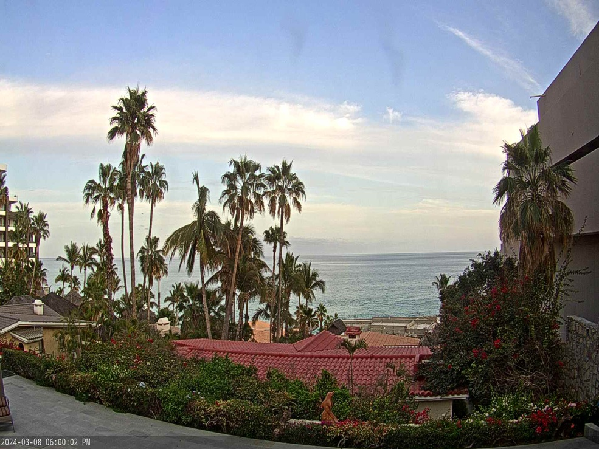

Travel

I have traveled to many places, but my favorite destinations throughout the years have been:
Paris, France
Cabo San Lucas, Mexico
London, England
Belgium
Whales
Badlands, South Dakota
Marco Island, Florida